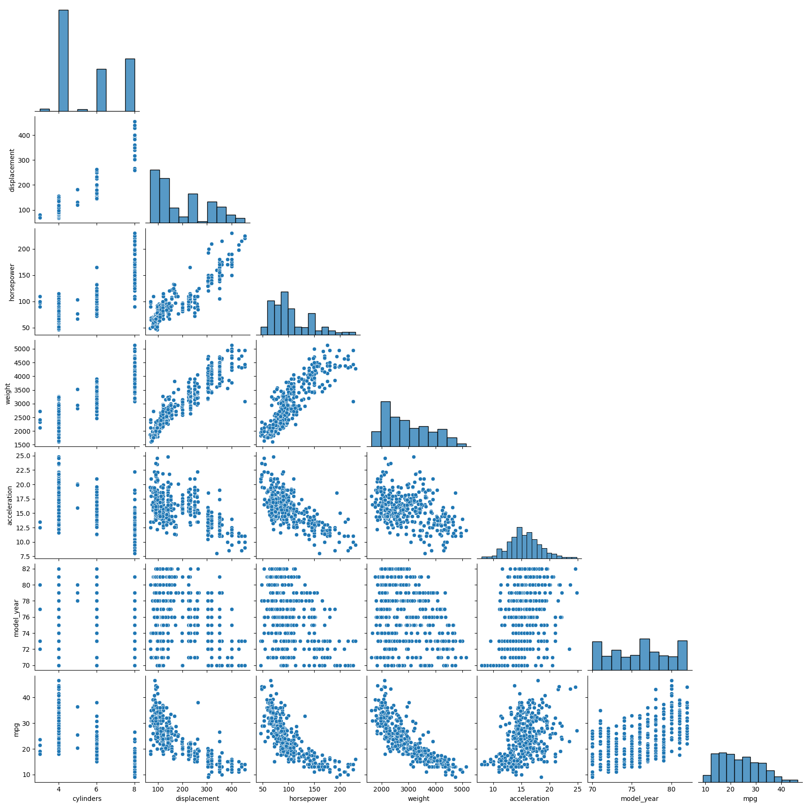
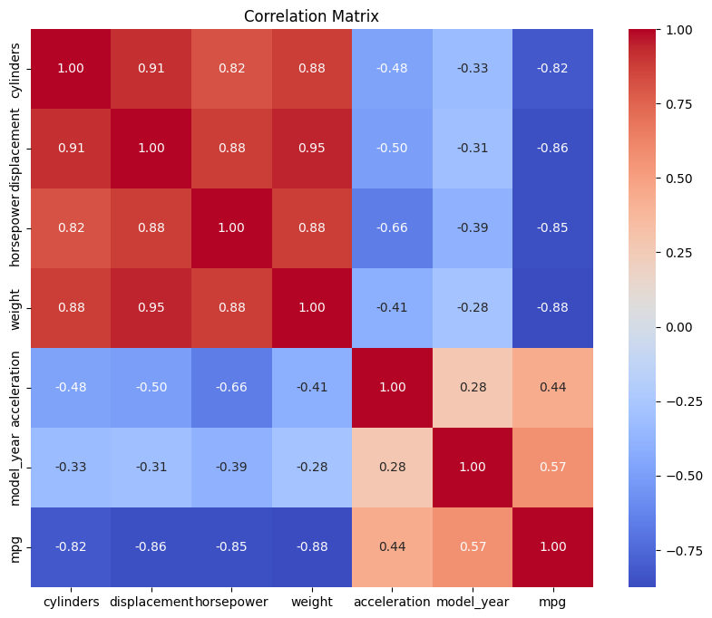
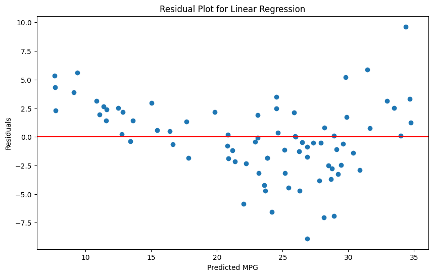
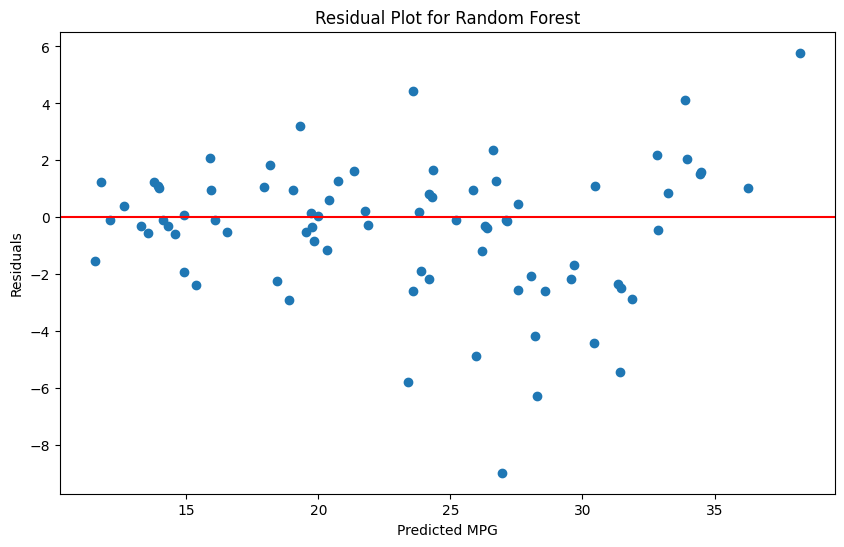
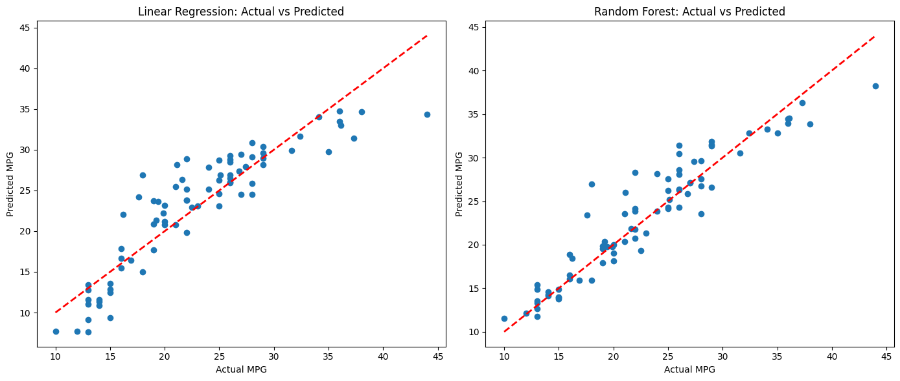
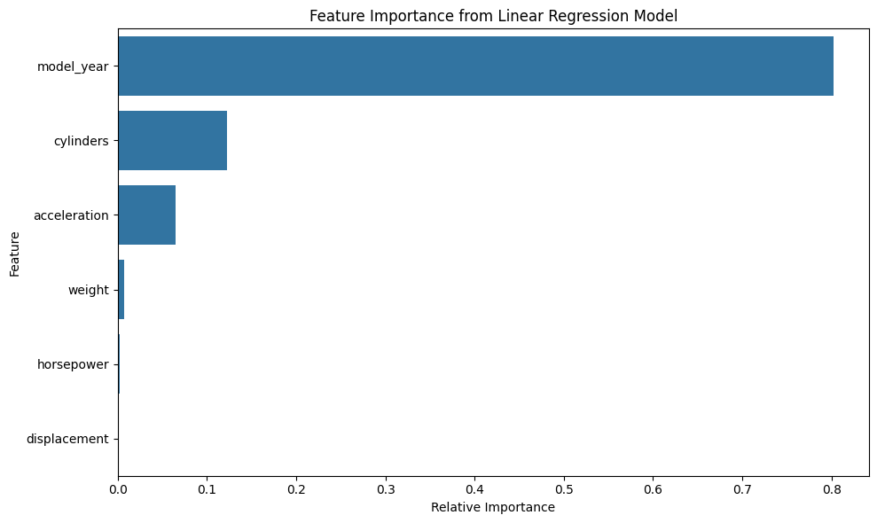
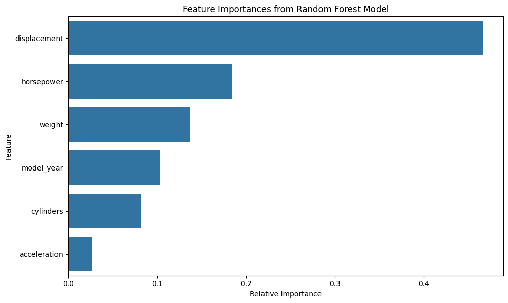
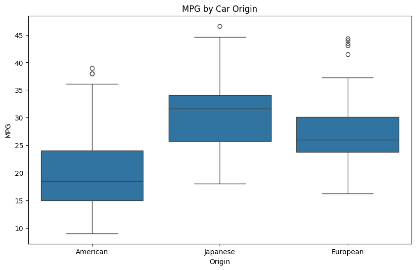

import matplotlib.pyplot as plt
import numpy as np
import pandas as pd
import seaborn as sns
from sklearn.ensemble import RandomForestRegressor
from sklearn.linear_model import LinearRegression
from sklearn.metrics import mean_absolute_error
from sklearn.metrics import mean_squared_error
from sklearn.metrics import r2_score
from sklearn.model_selection import cross_validate
from sklearn.model_selection import train_test_split
from sklearn.preprocessing import PolynomialFeatures
Regression Techniques in Python (Intermediate)
ASRI 2025

The notebook uses the following modules:
matplotlib: Provides basic graphing/charting.numpy: Allows matrix and vector/array math.pandas: Provides DataFrame functionality.seaborn: Works withmatplotlibto provide nicer graphs.sklearn: Scikit-Learn provides machine learning and data manipulation tools.
We will rely heavily on the Scikit-Learn library for models, metrics, and experimental design tools. See the full documentation for this fantastic library at https://scikit-learn.org.
First, some terms and definitions:
Regression is the process of predicting a continuous value given the random variables for a given sample.
Continuous values are numeric values that can take on any value within some range. Examples include height, weight, temperature, price, etc.
A sample consists of all of the experimental information gathered for one item in the dataset. Sometimes a sample is called an object or item. Usually samples are arranged as rows in tabular datasets (CSV files, Excel spreadsheets, or similar).
A random variable, sometimes called an input variable, measurement, or feature, is the recorded value for some property of the sample that was measured in the experiment, e.g. “weight”, “horsepower”, “number of cylinders”, etc.
You have a regression problem if the dependent variable (output value) you are trying to predict is continuous.
We will focus first on regression problems where the random variables are also continuous.
At the end, a section is provided with some tips for working with random variables that are categorical.
Let’s see some code!
First, we have to import the modules, objects, and functions we will be using in this tutorial:
The Dataset
For this tutorial, we will use the “Auto MPG” dataset, which is a classic dataset for regression tasks. It contains information about various automobiles, including their fuel consumption in miles per gallon (mpg, which will be our target variable to predict.
Let’s load the dataset and take a look at it:
# Define column names based on the dataset description
column_names = ['mpg', 'cylinders', 'displacement', 'horsepower', 'weight',
'acceleration', 'model_year', 'origin', 'car_name']
# Download the dataset from UCI ML Repository if needed.
! [[ -f auto+mpg.zip ]] || { wget https://archive.ics.uci.edu/static/public/9/auto+mpg.zip && unzip -o auto+mpg.zip && rm Index auto-mpg.data-original; }
# Load the dataset
auto_mpg = pd.read_csv('auto-mpg.data', sep=r'\s+', names=column_names)
# Display the first few rows
auto_mpg.head()| mpg | cylinders | displacement | horsepower | weight | acceleration | model_year | origin | car_name | |
|---|---|---|---|---|---|---|---|---|---|
| 0 | 18.0 | 8 | 307.0 | 130.0 | 3504.0 | 12.0 | 70 | 1 | chevrolet chevelle malibu |
| 1 | 15.0 | 8 | 350.0 | 165.0 | 3693.0 | 11.5 | 70 | 1 | buick skylark 320 |
| 2 | 18.0 | 8 | 318.0 | 150.0 | 3436.0 | 11.0 | 70 | 1 | plymouth satellite |
| 3 | 16.0 | 8 | 304.0 | 150.0 | 3433.0 | 12.0 | 70 | 1 | amc rebel sst |
| 4 | 17.0 | 8 | 302.0 | 140.0 | 3449.0 | 10.5 | 70 | 1 | ford torino |
The mpg column contains the value that we want to predict (it is our target column). We’ll use the other numeric columns as random variables (predictors).
It will make things easier if we create variables to contain the name of the target column and the random variables. These can be used when we interact with Pandas DataFrames to quickly select those columns by name.
target_col = "mpg"
random_var_cols = [
"cylinders",
"displacement",
"horsepower",
"weight",
"acceleration",
"model_year"
]Let’s use the info() DataFrame method to see what kinds of values we have, and whether there are any missing values.
auto_mpg.info()<class 'pandas.core.frame.DataFrame'>
RangeIndex: 398 entries, 0 to 397
Data columns (total 9 columns):
# Column Non-Null Count Dtype
--- ------ -------------- -----
0 mpg 398 non-null float64
1 cylinders 398 non-null int64
2 displacement 398 non-null float64
3 horsepower 398 non-null object
4 weight 398 non-null float64
5 acceleration 398 non-null float64
6 model_year 398 non-null int64
7 origin 398 non-null int64
8 car_name 398 non-null object
dtypes: float64(4), int64(3), object(2)
memory usage: 28.1+ KB🤔 We notice that the ‘horsepower’ column is not recognized as numeric (the type is reported as “object”). Let’s check if there are any non-numeric values.
One way to do that is to look at the values. Another is to write a function to check if each value can be converted to a float, and return True if it can or False otherwise. Then, we can just filter for values that will not convert:
def is_number(x):
"""Returns True if `x` is a number, or False otherwise."""
try:
float(x)
except ValueError:
return False
return True
# List the values and counts for all non-numeric values in the 'horsepower' variable:
auto_mpg.loc[auto_mpg['horsepower'].apply(is_number) == False, 'horsepower'].value_counts()horsepower
? 6
Name: count, dtype: int64From this, we can see that the only non-numeric value is ‘?’. So, we could convert the column to numeric after replacing the ‘?’ values with na.nan, or we can just reload the DataFrame from the CSV file and tell Pandas to treat ‘?’ as NA. We will do the latter to demonstrate how to do it, and because this dataset is small enough that it will not take long to do it that way. (For larger data, the former approach would probably be faster.)
# Re-load the dataset, treating '?' as NA values.
auto_mpg = pd.read_csv('auto-mpg.data', sep=r'\s+', names=column_names, na_values='?')
# Check the info again
auto_mpg.info()<class 'pandas.core.frame.DataFrame'>
RangeIndex: 398 entries, 0 to 397
Data columns (total 9 columns):
# Column Non-Null Count Dtype
--- ------ -------------- -----
0 mpg 398 non-null float64
1 cylinders 398 non-null int64
2 displacement 398 non-null float64
3 horsepower 392 non-null float64
4 weight 398 non-null float64
5 acceleration 398 non-null float64
6 model_year 398 non-null int64
7 origin 398 non-null int64
8 car_name 398 non-null object
dtypes: float64(5), int64(3), object(1)
memory usage: 28.1+ KBNow, we have correct data types. We will still have missing values in ‘horsepower’ though, so we need to remove those rows:
ℹ️ Pandas has a method called dropna() that can drop missing values.
In this case, we want to call it with the subset argument set to our random variable cols (random_var_cols) and the axis argument set to 0.
# Now drop rows with missing values
auto_mpg = auto_mpg.dropna(subset=random_var_cols, axis=0)📊 Visualize Early, Visualize Often
Let’s take a look at the dataset. We will plot some relationships between our target variable (mpg) and the predictors. (This will take several seconds.)
sns.pairplot(auto_mpg[random_var_cols + [target_col]], corner=True)
Looking at the pairplot, we can see that there are clear relationships between MPG and the various predictors (bottom row). For example, as weight increases, MPG tends to decrease. Similarly, as horsepower and displacement increase, MPG tends to decrease. These relationships make intuitive sense: heavier cars with more powerful engines typically consume more fuel.
We can also see that some of the predictors have relationships with one another, which could be a problem for models that assume independent variables. Let’s get a sense of that by plotting the (Spearman) correlation between all the variables:
# Calculate correlation matrix. We use Spearman because we observed some non-linear relationships in the pairplot.
correlation_matrix = auto_mpg[random_var_cols + [target_col]].corr('spearman')
# Plot the correlation matrix as a heatmap
plt.figure(figsize=(10, 8))
sns.heatmap(correlation_matrix, annot=True, cmap='coolwarm', fmt=".2f")
plt.title("Correlation Matrix")
plt.show()
The correlation matrix confirms our observations from the scatter plots. We can see strong negative correlations between MPG and weight, displacement, and horsepower. This suggests that these variables will be important predictors in our regression models.
✨ Choosing the right random variables for prediction is vital. This is why it is a good idea to get to know your dataset early in the process! Visualize early, visualize often!
Let’s see how well we can predict MPG with a linear model.
First, we’ll use the LinearRegression model from scikit-learn.
Based on the visualizations above, let’s start with a simple model using just weight and displacement as predictors:
simple_random_var_cols = [
"weight",
"displacement",
]For scoring, we will use R² and Mean Absolute Error (MAE).
scoring_metrics = {
'r2': 'r2',
'mae': 'neg_mean_absolute_error',
}To quickly determine if a linear model will be suitable for this problem, we can use the cross_validate() function from Scikit-Learn. This function wraps up a lot of functionality. It will set up a k-fold cross validation experiment (with default of \(k=5\), for five-fold CV). It will take the model of your choice and automatically train the model for each training fold, then predict the test cases and score the predictions on the test folds (with the R² metric by default for regression).
The scores for each fold are returned. We can calculate and report the mean score over all five folds along with the standard deviation of the scores to see whether the model is able to do a good job in general, and how much variation we would expect for different training sets. Models should have high R² values, and a low standard deviation would indicate that the model generalizes to new data very well. (A high standard deviation would indicate the model is unstable and doesn’t generalize well.) For the Mean Absolute Error metric, we want smaller values (less deviation from the true mpg, and a small standard deviation.
The linear model will look like:
\[ y_{mpg} = \beta_0 + \beta_1 x_{weight} + \beta_2 x_{displacement} \]
scores = cross_validate(
LinearRegression(), X=auto_mpg[simple_random_var_cols], y=auto_mpg[target_col],
scoring=scoring_metrics
)
print(
f"mean R² : {scores['test_r2'].mean():0.3f}, std: {scores['test_r2'].std():0.3f}\n"
f"mean MAE: {-scores['test_mae'].mean():0.1f} mpg, std: {scores['test_mae'].std():0.1f} mpg."
) # print mean and standard deviation of score metricsmean R² : 0.326, std: 0.523
mean MAE: 3.8 mpg, std: 1.4 mpg.😞 The two-variable linear model seems pretty unstable at this task. Look closely at the R² mean: 0.326 is a pretty low R² value to begin with, and the standard deviation over the 5 runs of the cross-validation experiment was 0.523, which is larger than the mean value! That means that on average, the linear model can explain only about 33% of the variance in the data, and the high standard deviation means that the model is not generalizing very well.
🤔 We might have expected this if we look back at our pair plots of weight and displacement versus mpg. Do you see the “curve” to the scatter? That is a good indicator that a linear model might not be ideal for this task.
Let’s scale the model up to use all of our predictors.
For now, we will stick with a linear model. But, let’s use all of our random variables to see if that improves the result.
scores = cross_validate(
LinearRegression(), X=auto_mpg[random_var_cols], y=auto_mpg[target_col],
scoring=scoring_metrics
)
print(
f"mean R² : {scores['test_r2'].mean():0.3f}, std: {scores['test_r2'].std():0.3f}\n"
f"mean MAE: {-scores['test_mae'].mean():0.1f} mpg, std: {scores['test_mae'].std():0.1f} mpg."
) # print mean and standard deviation of score metricsmean R² : 0.571, std: 0.231
mean MAE: 3.1 mpg, std: 0.8 mpg.This provided a modest improvement, both in R² and standard deviation. We see a smaller change in MAE and its standard deviation, but still an improvement nonetheless.
Let’s try a non-linear model. Let’s consider a quadratic model (a polynomial model of degree 2). The model will look like:
\[ y_{mpg} = \beta_0 + \beta_1 x_{weight} + \beta_2 x_{displacement} + \beta_3 x_{weight}^2 + \beta_4 x_{displacement}^2 \]
The way we do this is to pre-compute the polynomial features \(x_{weight}^2\) and \(x_{displacement}^2\), then use a linear regression model as before.
poly = PolynomialFeatures(degree=2, include_bias=False)
scores = cross_validate(
LinearRegression(), X=poly.fit_transform(auto_mpg[random_var_cols]), y=auto_mpg[target_col],
scoring=scoring_metrics
)
print(
f"mean R² : {scores['test_r2'].mean():0.3f}, std: {scores['test_r2'].std():0.3f}\n"
f"mean MAE: {-scores['test_mae'].mean():0.1f} mpg, std: {scores['test_mae'].std():0.1f} mpg."
) # print mean and standard deviation of score metricsmean R² : 0.679, std: 0.222
mean MAE: 2.6 mpg, std: 1.0 mpg.🎉 Now we see a better result. R² above 65% is starting to look more promising (but not necessarily “good”). We see that on average our model is off by about 2.6 mpg. If that is an acceptable error amount, we might be happy with this one.
Now, let’s take a look at a different kind of model, just for comparison. A Random Forest model is a non-linear model that works well for lots of tasks. Scikit-Learn provides one called RandomForestRegressor for regression problems.
Let’s try it in exactly the same experimental setup we used for the linear model.
scores = cross_validate(
RandomForestRegressor(random_state=1),
X=auto_mpg[random_var_cols],
y=auto_mpg[target_col],
scoring=scoring_metrics
)
print(
f"mean R² : {scores['test_r2'].mean():0.3f}, std: {scores['test_r2'].std():0.3f}\n"
f"mean MAE: {-scores['test_mae'].mean():0.1f} mpg, std: {scores['test_mae'].std():0.1f} mpg."
) # print mean and standard deviation of score metricsmean R² : 0.748, std: 0.198
mean MAE: 2.2 mpg, std: 0.8 mpg.The random forest did even better than the quadratic model! This suggests that there might be non-linear relationships in the data that the random forest is able to capture better than either the linear or quadratic models.
One note:
We used random_state=1 to seed the random number generator within the model, causing it to produce identical results if we train it again on the same data. Random forests (as implied by their name) rely on some randomness during training, so you don’t expect to get the same performance every time. This makes reproducible results difficult.
💡 By seeding the random state, we “lock” it to a specific outcome (assuming no external changes). This way, others can reproduce our results in the future.
Exploring more ways to characterize regressor performance.
📊 Visualize!
When evaluating regression models, it’s important to look at the residuals (the differences between predicted and actual values). A good regression model should have residuals that are randomly distributed around zero.
Let’s split our data into training and testing sets, train our models, and then visualize the residuals:
# Split the data into training and testing sets
X_train, X_test, y_train, y_test = train_test_split(
auto_mpg[random_var_cols], auto_mpg[target_col], test_size=0.2, random_state=42
)
# Train the linear regression model
linear_model = LinearRegression().fit(X_train, y_train)
# Make predictions on the test set
linear_preds = linear_model.predict(X_test)
# Calculate residuals
linear_residuals = y_test - linear_preds
# Plot the residuals
plt.figure(figsize=(10, 6))
plt.scatter(linear_preds, linear_residuals)
plt.axhline(y=0, color='r', linestyle='-')
plt.xlabel('Predicted MPG')
plt.ylabel('Residuals')
plt.title('Residual Plot for Linear Regression')
plt.show()
✨ Interpreting a residual plot: To interpret a residual plot like the one above, we look at two things: (1) The magnitude of the residuals, which represents how far our predictions are from the actual values. We want the dots to be close to the zero line. (2) The shape of the residuals. The plotted residuals are ordered by magnitude of the prediction from smallest to largest, covering the range of predicted values. What we want is to see no trend or “pattern” to the scatter of residuals versus the zero line. If we see a trend or pattern, then it is a clue that our model is not making the same mistakes across the range of its outputs, and so it might not be a good fit for the application.
Here, we see that there is a “curve” in the residuals—they start above the zero line, trend downward, then back up again (a “smile” pattern). This is a clue that the actual target variable “mpg” is probably not a linear function of the predictors. A non-linear model might work better.
Now let’s do the same plot for the Random Forest model:
# Train the random forest model
rf_model = RandomForestRegressor(random_state=1).fit(X_train, y_train)
# Make predictions on the test set
rf_preds = rf_model.predict(X_test)
# Calculate residuals
rf_residuals = y_test - rf_preds
# Plot the residuals
plt.figure(figsize=(10, 6))
plt.scatter(rf_preds, rf_residuals)
plt.axhline(y=0, color='r', linestyle='-')
plt.xlabel('Predicted MPG')
plt.ylabel('Residuals')
plt.title('Residual Plot for Random Forest')
plt.show()
Here, we don’t see as much of a pattern. That is a good thing. For the most part, our Random Forest model seems to be making similar errors across its range, with two possible exceptions: The smaller predictions seem to be better than the larger ones in general, and there is a rough patch between about 22 and 32 mpg. where the model seems to be over-predicting more than everywhere else. An even more powerful model might be able to do a better job, but we won’t investigate that in this workshop.
💡 Another way to visualize the errors: Let’s also compare the actual vs. predicted values for both models:
# Create a figure with two subplots
fig, (ax1, ax2) = plt.subplots(1, 2, figsize=(14, 6))
# Plot actual vs predicted for Linear Regression
ax1.scatter(y_test, linear_preds)
ax1.plot([y_test.min(), y_test.max()], [y_test.min(), y_test.max()], 'r--', lw=2)
ax1.set_xlabel('Actual MPG')
ax1.set_ylabel('Predicted MPG')
ax1.set_title('Linear Regression: Actual vs Predicted')
# Plot actual vs predicted for Random Forest
ax2.scatter(y_test, rf_preds)
ax2.plot([y_test.min(), y_test.max()], [y_test.min(), y_test.max()], 'r--', lw=2)
ax2.set_xlabel('Actual MPG')
ax2.set_ylabel('Predicted MPG')
ax2.set_title('Random Forest: Actual vs Predicted')
plt.tight_layout()
plt.show()
Interpretation: To interpret these plots, keep in mind that the dotted red line represents a “perfect fit” model. We don’t expect every dot to be on the line, but we want them close and randomly spread around it (no patterns). On the left plot (the linear model), we see a “bent” scatter of points compared to the line, indicating a bad fit. On the right, the Random Forest (RF) behaves better, but we can see the over-prediction in the mid-range and then the beginnings of under-prediction happing at the top end (similar to what we see on the linear model’s graph). Again, the RF looks better, but leaves room for improvement.
Non-visual metrics
Let’s look at other regression metrics.
Scikit-Learn provides several metrics appropriate for evaluating regression models. You can see the list at https://scikit-learn.org/stable/modules/model_evaluation.html#regression-metrics.
We’ll calculate some common metrics for both models:
# Calculate metrics for Linear Regression
linear_mse = mean_squared_error(y_test, linear_preds)
linear_rmse = np.sqrt(linear_mse)
linear_mae = mean_absolute_error(y_test, linear_preds)
linear_msd = np.mean(linear_preds-y_test)
linear_r2 = r2_score(y_test, linear_preds)
# Calculate metrics for Random Forest
rf_mse = mean_squared_error(y_test, rf_preds)
rf_rmse = np.sqrt(rf_mse)
rf_mae = mean_absolute_error(y_test, rf_preds)
rf_msd = np.mean(rf_preds-y_test)
rf_r2 = r2_score(y_test, rf_preds)
# Create a DataFrame to display the metrics
metrics_df = pd.DataFrame({
'Model': ['Linear Regression', 'Random Forest'],
'MSE': [linear_mse, rf_mse],
'RMSE': [linear_rmse, rf_rmse],
'MAE': [linear_mae, rf_mae],
'MSD': [linear_msd, rf_msd],
'R²': [linear_r2, rf_r2]
})
metrics_df| Model | MSE | RMSE | MAE | MSD | R² | |
|---|---|---|---|---|---|---|
| 0 | Linear Regression | 10.502370 | 3.240736 | 2.503860 | 0.179652 | 0.794235 |
| 1 | Random Forest | 5.876812 | 2.424214 | 1.732253 | 0.409367 | 0.884860 |
Let’s understand these metrics:
- Mean Squared Error (MSE): The average of the squared differences between predicted and actual values. Lower is better.
- Root Mean Squared Error (RMSE): The square root of MSE. It’s in the same units as the target variable, making it more interpretable. Lower is better.
- Mean Absolute Error (MAE): The average of the absolute differences between predicted and actual values. Lower is better.
- Mean Signed Deviation (MSD): The average of the differences between predicted and actual values, retaining the sign. Closer to zero is better, and the sign indicates the direction of the bias (e.g. model is over-predicting vs. under-predicting).
- R² (Coefficient of Determination): Represents the proportion of variance in the dependent variable that is predictable from the independent variables. Ranges from 0 to 1, with higher values indicating better fit.
Based on these metrics, the Random Forest model outperforms the Linear Regression model on our test set. However, MSD reveals that the RF model is a bit more biased toward over-predicting the mpg than the linear model. So, when RF makes a mistake, it is more likely to favor higher mpg.
Feature Importance
Some models can provide information about the importance of each featuer, allowing us to understand the underlying process better and perhaps perform feature selection to simplify our models. Different models do this differently.
Linear Regression models convey feature importance in the magnitude of the coefficients they compute for each feature. You can access this information for Scikit-Learn LinearRegression models in the coef_ attribute:
# We will get the absolute values of the coefficients, since we don't care about direction here
linear_feature_importance = np.abs(linear_model.coef_)
# And then normalize them so that they sum to 1.0 just to make the scale easier to interpret.
linear_feature_importance /= np.sum(linear_feature_importance)
# Create a DataFrame to display feature importance
linear_importance_df = pd.DataFrame({
'Feature': random_var_cols,
'Importance': linear_feature_importance
})
# Sort by importance
linear_importance_df = linear_importance_df.sort_values('Importance', ascending=False)
# Plot feature importance
plt.figure(figsize=(10, 6))
sns.barplot(x='Importance', y='Feature', data=linear_importance_df)
plt.title('Feature Importance from Linear Regression Model')
plt.xlabel("Relative Importance")
plt.tight_layout()
plt.show()
📈 We can see from this that “model_year” had the most impact on the linear model. Looking back at the original scatterplots, we can see that model year does have a mostly-linear trend where mpg tends to increase in more recent years.
The RandomForestRegressor model provides feature importance information in its feature_importances_ attribute:
# Get feature importances from the Random Forest model (it is already normalized to sum to 1.0).
rf_feature_importance = rf_model.feature_importances_
# Create a DataFrame to display feature importance
importance_df = pd.DataFrame({
'Feature': random_var_cols,
'Importance': rf_feature_importance
})
# Sort by importance
importance_df = importance_df.sort_values('Importance', ascending=False)
# Plot feature importances
plt.figure(figsize=(10, 6))
sns.barplot(x='Importance', y='Feature', data=importance_df)
plt.title('Feature Importances from Random Forest Model')
plt.xlabel("Relative Importance")
plt.tight_layout()
plt.show()
🤔 Notice that the RF model has a different conclusion about which feature is most important, choosing “displacement”. Displacement seemed highly correlated with mpg in the original scatterplot, but the relationship is highly non-linear, and has redundancy with “cylinders” and “horsepower”. The RF was able to use this variable in spite of these challenges.
Working with categorical features
So far, we’ve only used numeric features for our predictors. But the Auto MPG dataset also contains a categorical feature:
origin- three levels: [1, 2, 3] representing American, European, and Japanese cars respectively
Let’s convert this numeric encoding to more meaningful labels first:
# Create a mapping dictionary
origin_map = {1: 'American', 2: 'European', 3: 'Japanese'}
# Create a new column with the mapped values
auto_mpg['origin_name'] = auto_mpg['origin'].map(origin_map)
# Display the first few rows to verify
auto_mpg[['origin', 'origin_name']].head()| origin | origin_name | |
|---|---|---|
| 0 | 1 | American |
| 1 | 1 | American |
| 2 | 1 | American |
| 3 | 1 | American |
| 4 | 1 | American |
Now let’s visualize how MPG varies by origin:
plt.figure(figsize=(10, 6))
sns.boxplot(x='origin_name', y='mpg', data=auto_mpg)
plt.title('MPG by Car Origin')
plt.xlabel('Origin')
plt.ylabel('MPG')
plt.show()
We can see that there are differences in MPG based on the car’s origin. Japanese cars tend to have higher MPG, followed by European cars, with American cars having the lowest MPG on average.
To include this categorical variable in our regression models, we need to encode it. One common approach is one-hot encoding.
One-hot encoding is an encoding technique in which a variable with \(N\) levels is split into \(N\) new pseudo-variables where each is a binary variable encoded as 1 or 0.
Let’s see how our origin variable might look if it were one-hot encoded:
Before
mpg cylinders displacement ... origin car_name
20.5 6 200.0 ... 1 chevrolet malibu
15.0 8 350.0 ... 1 buick skylark 320
22.0 4 121.0 ... 2 volkswagen 411 (sw)
26.0 4 98.00 ... 2 fiat 124 sport coupe
32.0 4 71.00 ... 3 toyota corolla 1200
24.0 4 120.0 ... 3 honda civicAfter
mpg cylinders displacement ... origin_American origin_European origin_Japanese car_name
20.5 6 200.0 ... 1 0 0 chevrolet malibu
15.0 8 350.0 ... 1 0 0 buick skylark 320
22.0 4 121.0 ... 0 1 0 volkswagen 411 (sw)
26.0 4 98.00 ... 0 1 0 fiat 124 sport coupe
32.0 4 71.00 ... 0 0 1 toyota corolla 1200
24.0 4 120.0 ... 0 0 1 honda civicHere’s the code:
Pandas can do this in a dataframe by using the get_dummies() method. You provide a prefix (like "origin") and the existing levels are used to complete the new column names.
sample_rows = [253, 1, 77, 114, 131, 149] # this lets us select the same cars shown above
auto_mpg_encoded = pd.get_dummies( # get_dummies converts to one-hot encoding
auto_mpg, columns=["origin_name"], prefix="origin", dtype=int
)
auto_mpg_encoded.loc[sample_rows][['mpg', 'origin_American', 'origin_European', 'origin_Japanese', 'car_name']]| mpg | origin_American | origin_European | origin_Japanese | car_name | |
|---|---|---|---|---|---|
| 253 | 20.5 | 1 | 0 | 0 | chevrolet malibu |
| 1 | 15.0 | 1 | 0 | 0 | buick skylark 320 |
| 77 | 22.0 | 0 | 1 | 0 | volkswagen 411 (sw) |
| 114 | 26.0 | 0 | 1 | 0 | fiat 124 sport coupe |
| 131 | 32.0 | 0 | 0 | 1 | toyota corolla 1200 |
| 149 | 24.0 | 0 | 0 | 1 | honda civic |
Now let’s use these one-hot encoded features in our regression models:
# Define columns including one-hot encoded origin
all_features = random_var_cols + ['origin_American', 'origin_European', 'origin_Japanese']Now we will evaluate each of our models with a 5-fold CV like we did in the beginning, and compare the original features to the ones with origin information included:
# create a helper function so we don't have to repeat this code too much
def do_evaluation(model, X, y, caption):
scores = cross_validate( model, X, y, scoring=scoring_metrics)
print(
f"{caption}\n"
f"mean R² : {scores['test_r2'].mean():0.3f}, std: {scores['test_r2'].std():0.3f}\n"
f"mean MAE: {-scores['test_mae'].mean():0.1f} mpg, std: {scores['test_mae'].std():0.2f} mpg.\n"
) # print mean and standard deviation of score metricsdo_evaluation(LinearRegression(), X=auto_mpg[random_var_cols], y=auto_mpg[target_col], caption="Linear Regression without origin info:")
do_evaluation(LinearRegression(), X=auto_mpg_encoded[all_features], y=auto_mpg_encoded[target_col], caption="Linear Regression including origin info:")
print("---\n")
poly = PolynomialFeatures(degree=2, include_bias=False)
do_evaluation(LinearRegression(), X=poly.fit_transform(auto_mpg[random_var_cols]), y=auto_mpg[target_col], caption="Polynomial (d=2) Regression without origin info:")
do_evaluation(LinearRegression(), X=poly.fit_transform(auto_mpg_encoded[all_features]), y=auto_mpg_encoded[target_col], caption="Polynomial (d=2) Regression including origin info:")
print("---\n")
do_evaluation(RandomForestRegressor(random_state=1), X=auto_mpg[random_var_cols], y=auto_mpg[target_col], caption="Random Forest regression without origin info:")
do_evaluation(RandomForestRegressor(random_state=1), X=auto_mpg_encoded[all_features], y=auto_mpg_encoded[target_col], caption="Random Forest regression including origin info:")Linear Regression without origin info:
mean R² : 0.571, std: 0.231
mean MAE: 3.1 mpg, std: 0.76 mpg.
Linear Regression including origin info:
mean R² : 0.594, std: 0.197
mean MAE: 3.0 mpg, std: 0.68 mpg.
---
Polynomial (d=2) Regression without origin info:
mean R² : 0.679, std: 0.222
mean MAE: 2.6 mpg, std: 0.97 mpg.
Polynomial (d=2) Regression including origin info:
mean R² : 0.661, std: 0.210
mean MAE: 2.6 mpg, std: 0.85 mpg.
---
Random Forest regression without origin info:
mean R² : 0.748, std: 0.198
mean MAE: 2.2 mpg, std: 0.76 mpg.
Random Forest regression including origin info:
mean R² : 0.752, std: 0.194
mean MAE: 2.2 mpg, std: 0.77 mpg.
Including the origin as a categorical feature has improved our model performance in the linear regression model, but not significantly. The other models were mostly unchanged by the addition of this variable.
However, categorical variables can be very important in some datasets! Consider encoding them and using them in the model; you can evaluate whether or not it was worthwhile before training your final model version.
There’s More Than One Way to Do It
You can also use the OneHotEncoder from Scikit-Learn to encode categorical variables. It’s particularly useful when you don’t want to modify your original dataframe and prefer to create a “data pipeline” for preprocessing your data during training or inference.
In fact, there are several other approaches to encoding categorical values.
You can learn a lot more here: https://www.kaggle.com/code/arashnic/an-overview-of-categorical-encoding-methods
Thank You!
This notebook in tutorial and completed form is available at: